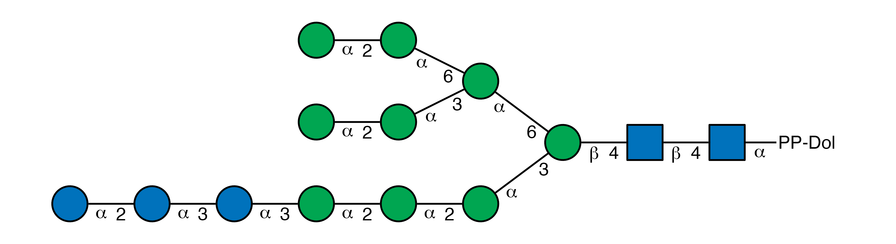
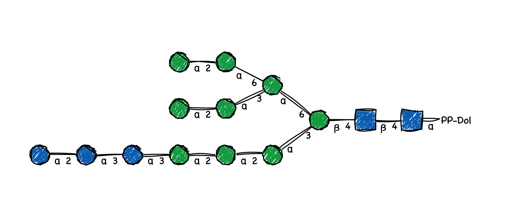
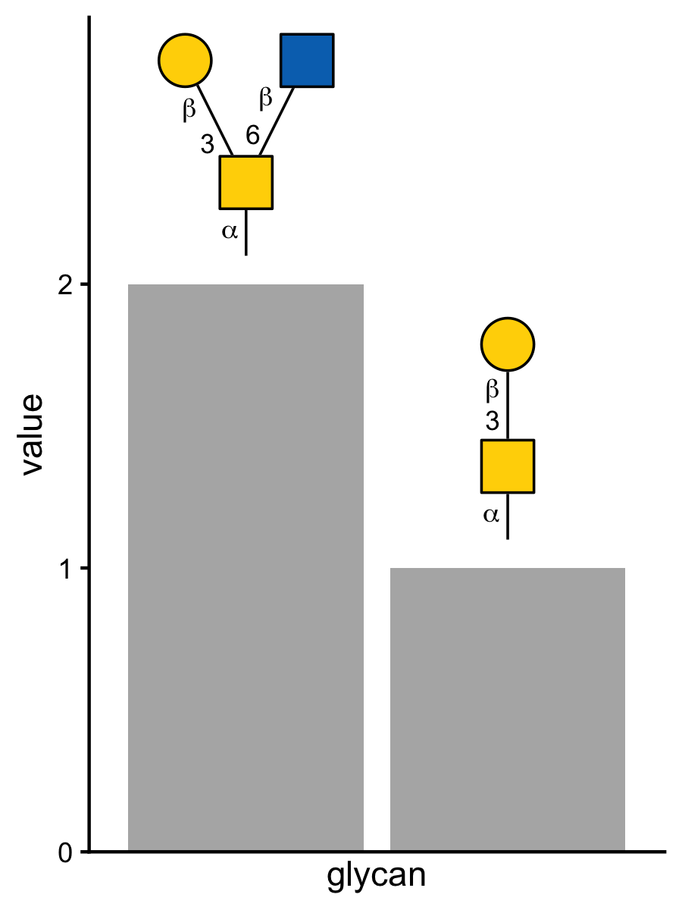
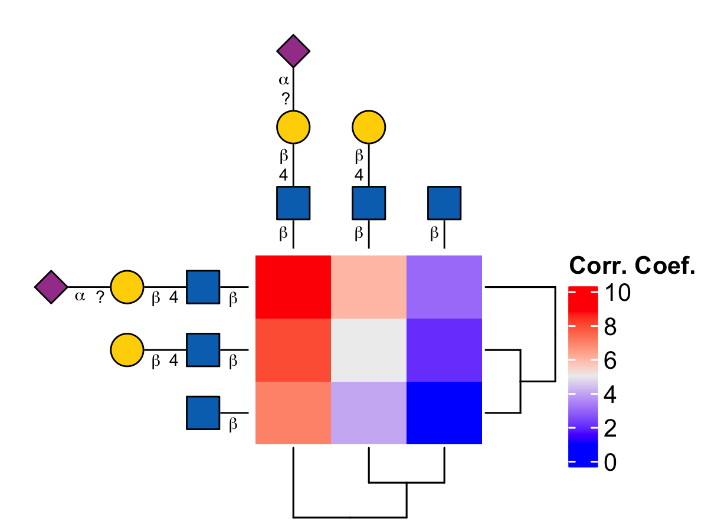
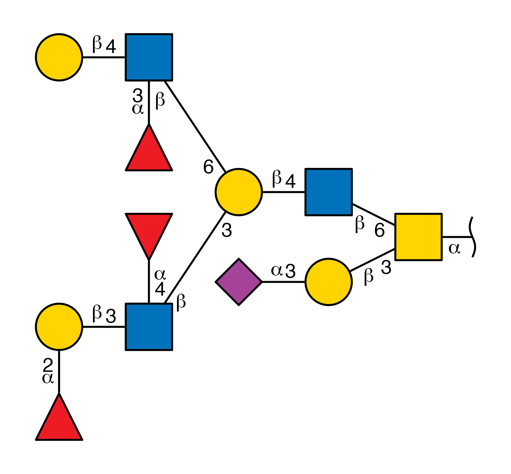
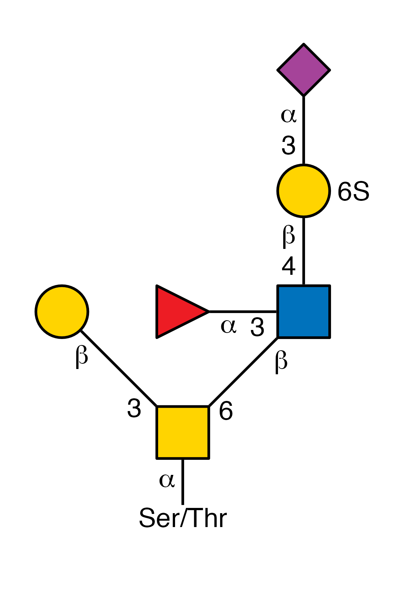
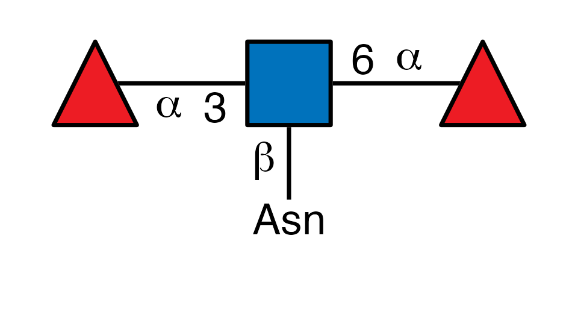
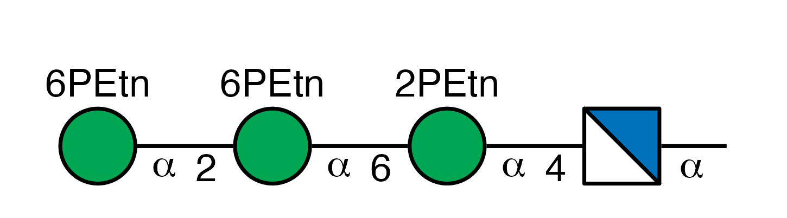
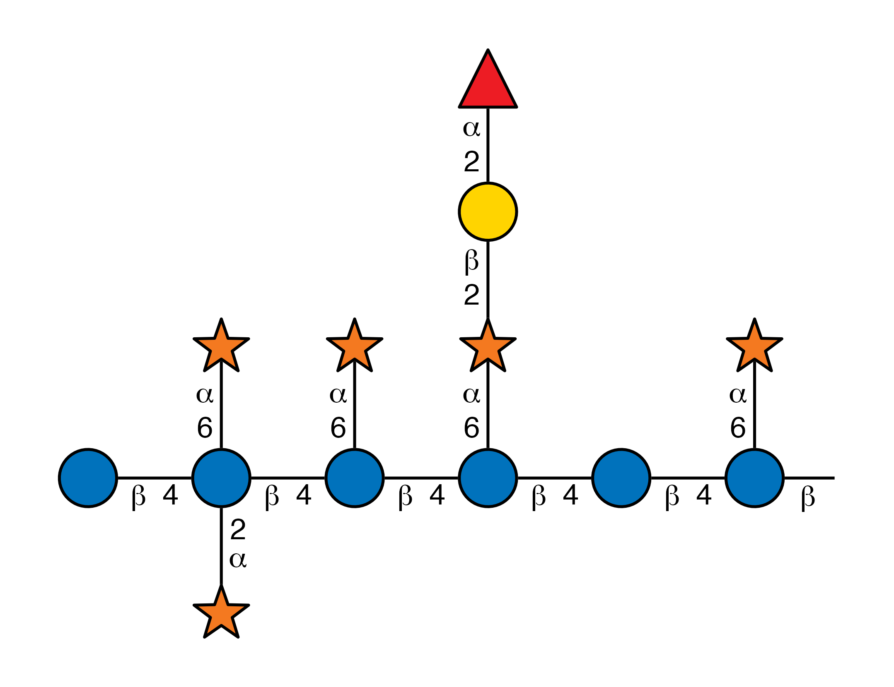

glydraw is a ggplot2-native R engine for drawing reproducible SNFG glycan cartoons from glycan structure objects or text notations, with support for batch export, structural highlighting, and deep appearance customization.
Installation
Install glycoverse
We recommend installing the meta-package glycoverse, which includes this package and other core glycoverse packages.
Install glydraw alone
If you don’t want to install all glycoverse packages, you can only install glydraw.
You can install the latest release of glydraw from CRAN:
pak::pkg_install("glydraw")Or from r-universe:
pak::repo_add(glycoverse = "https://glycoverse.r-universe.dev")
pak::pkg_install("glydraw")Or install the latest GitHub release:
pak::pkg_install("glycoverse/glydraw@*release")Or install the development version from GitHub:
pak::pkg_install("glycoverse/glydraw")Example
Plot one glycan
library(glydraw)
glycan <- paste0(
"Glc(a1-2)Glc(a1-3)Glc(a1-3)Man(a1-2)Man(a1-2)Man(a1-3)[Man(a1-2)Man(a1-3)",
"[Man(a1-2)Man(a1-6)]Man(a1-6)]Man(b1-4)GlcNAc(b1-4)GlcNAc(a1-"
)
draw_cartoon(glycan, red_end = "PP-Dol")
Plot one sketch-style glycan
draw_cartoon_sketch() uses the optional ggsketch package to give a glycan cartoon hand-drawn strokes and patterned residue fills.
library(glydraw)
glycan <- paste0(
"Glc(a1-2)Glc(a1-3)Glc(a1-3)Man(a1-2)Man(a1-2)Man(a1-3)[Man(a1-2)Man(a1-3)",
"[Man(a1-2)Man(a1-6)]Man(a1-6)]Man(b1-4)GlcNAc(b1-4)GlcNAc(a1-"
)
draw_cartoon_sketch(glycan, red_end = "PP-Dol", seed = 1)
ggplot2 extension
glydraw provides ggplot2 extensions to plot glycan cartoons on a panel, axis, or legend. For example, geom_glycan() adds glycan cartoons to a bar plot:
library(ggplot2)
library(glydraw)
library(tibble)
plot_data <- tibble(
glycan = c("Gal(b1-3)GalNAc(a1-", "Gal(b1-3)[GlcNAc(b1-6)]GalNAc(a1-"),
value = c(1, 2)
)
ggplot(plot_data, aes(glycan, value)) +
geom_col(fill = "grey70") +
geom_glycan(
aes(structure = glycan),
orient = "up",
size = 0.5,
vjust = 0,
position = position_nudge(y = 0.1)
) +
scale_y_continuous(expand = expansion(mult = c(0, 0.4))) +
theme_classic() +
theme(
axis.text.x = element_blank(),
axis.ticks.x = element_blank()
)
ComplexHeatmap extension
anno_glycan() adds glycan cartoons as row or column labels in a ComplexHeatmap heatmap.
suppressPackageStartupMessages(library(ComplexHeatmap))
mat <- matrix(
seq_len(9),
nrow = 3,
dimnames = list(paste0("row", 1:3), paste0("column", 1:3))
)
structures <- c(
"GlcNAc(b1-",
"Gal(b1-4)GlcNAc(b1-",
"Neu5Ac(a2-?)Gal(b1-4)GlcNAc(b1-"
)
Heatmap(
mat,
name = "Corr. Coef.",
show_row_names = FALSE,
show_column_names = FALSE,
row_dend_side = "right",
column_dend_side = "bottom",
left_annotation = rowAnnotation(
glycan = anno_glycan(structures, which = "row")
),
top_annotation = HeatmapAnnotation(
glycan = anno_glycan(structures, which = "column")
)
)
Gallery
glycan <- paste0(
"Neu5Ac(a2-3)Gal(b1-3)[Fuc(a1-2)Gal(b1-3)[Fuc(a1-4)]GlcNAc(b1-3)",
"[Gal(b1-4)[Fuc(a1-3)]GlcNAc(b1-6)]Gal(b1-4)GlcNAc(b1-6)]GalNAc(a1-"
)
draw_cartoon(glycan, style = style_glygen())
glycan <- "Gal(b1-3)[Neu5Ac(a2-3)Gal6S(b1-4)[Fuc(a1-3)]GlcNAc(b1-6)]GalNAc(a1-"
draw_cartoon(glycan, orient = "up", red_end = "Ser/Thr")
glycan <- "Fuc(a1-3)[Fuc(a1-6)]GlcNAc(b1-"
draw_cartoon(
glycan,
orient = "up",
red_end = "Asn",
style = style_glydraw(fuc_orient = "up")
)
glycan <- paste0(
"WURCS=2.0/3,4,3/[a2122h-1a_1-5_2*N][a1122h-1a_1-5_2*OP^XOCCN/3O/3=O]",
"[a1122h-1a_1-5_6*OP^XOCCN/3O/3=O]/1-2-3-3/a4-b1_b6-c1_c2-d1"
)
draw_cartoon(glycan)
glycan <- "Glc(b1-4)[Xyl(a1-6)][Xyl(a1-2)]Glc(b1-4)[Xyl(a1-6)]Glc(b1-4)[Fuc(a1-2)Gal(b1-2)Xyl(a1-6)]Glc(b1-4)Glc(b1-4)[Xyl(a1-6)]Glc(b1-"
draw_cartoon(glycan, style = style_glydraw(fuc_orient = "up"))